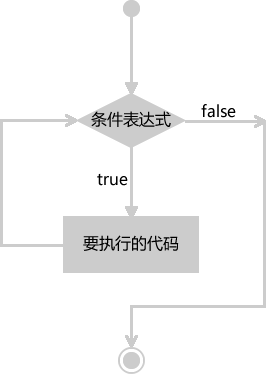

首页 > JavaScript
JS while循环语句的用法
循环就是重复做一件事，在编写代码的过程中，我们经常会遇到一些需要反复执行的操作，例如遍历一些数据、重复输出某个字符串等，如果一行行的写那就太麻烦了，对于这种重复的操作，我们应该选择使用循环来完成。
循环的目的就是为了反复执某段代码，使用循环可以减轻编程压力，避免代码冗余，提高开发效率，方便后期维护。while 循环是 JavaScript 中提供的最简单的循环语句，本节我们就来简单介绍一下 while 循环的使用。
while 循环的执行流程如下图所示：
示例代码如下：
1, 2, 3, 4, 5,
如果不小心造成无限循环，可能会导致浏览器或者计算机卡死。
1 + 2 + 3 + ... + 98 + 99 + 100 = 5050
【示例2】找出 1900 年到 2020 年之间所有的闰年，并以每行 6 个进行输出：
循环的目的就是为了反复执某段代码，使用循环可以减轻编程压力，避免代码冗余，提高开发效率，方便后期维护。while 循环是 JavaScript 中提供的最简单的循环语句，本节我们就来简单介绍一下 while 循环的使用。
JS while 循环语法
JS while 循环的语法格式如下：
while (条件表达式) {
// 要执行的代码
}
{ } 中的代码，如果条件表达式的结果为 false，则退出 while 循环，执行 while 循环之后的代码。while 循环的执行流程如下图所示：

图1：JS while 循环的执行流程
图1：JS while 循环的执行流程
示例代码如下：
var i = 1;
while( i <= 5) {
document.write(i+", ");
i++;
}
运行结果：1, 2, 3, 4, 5,
注意事项
在编写循环语句时，一定要确保条件表达式的结果能够为假（即布尔值 false），因为只要表达式的结果为 true，循环会一直持续下去，不会自动停止，对于这种无法自动停止的循环，我们通常将其称为“无限循环”或“死循环”。如果不小心造成无限循环，可能会导致浏览器或者计算机卡死。
JS while 循环示例
【示例1】使用 while 循环计算 1~100 之间所有整数的和：
var i=1;
var sum=0;
while (i <= 100){
sum += i;
i++;
}
document.write("1 + 2 + 3 + ... + 98 + 99 + 100 = " + sum)
运行结果：1 + 2 + 3 + ... + 98 + 99 + 100 = 5050
【示例2】找出 1900 年到 2020 年之间所有的闰年，并以每行 6 个进行输出：
var i = 1900;
var count = 0; //计数闰年的个数
while (i <= 2020) {
//判断是否是闰年
if (i % 4 == 0 && i % 100 != 0 || i % 400 == 0) {
document.write(i + " ");
count++;
if (count % 6 == 0) {
document.write("<br/>");
}
}
i++;
}
运行结果：
1904 1908 1912 1916 1920 1924 1928 1932 1936 1940 1944 1948 1952 1956 1960 1964 1968 1972 1976 1980 1984 1988 1992 1996 2000 2004 2008 2012 2016 2020
关注公众号「站长严长生」，在手机上阅读所有教程，随时随地都能学习。内含一款搜索神器，免费下载全网书籍和视频。

微信扫码关注公众号